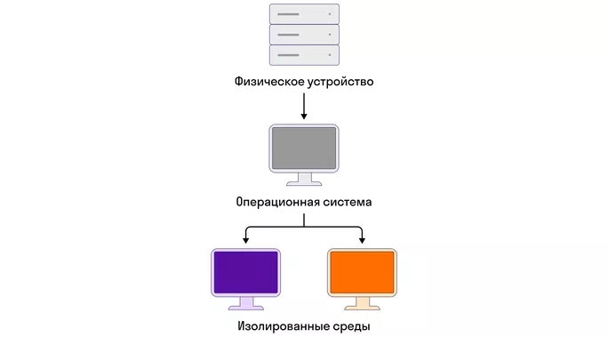
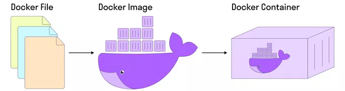

Разработчики в рамках практики CI/CD используют технологии контейнеризации и виртуализации, чтобы изолировать тестовые среды и упростить развертывание тестовых инфраструктур.
Виртуализация — создание изолированных сред на одном физическом устройстве.
Чтобы облегчить и ускорить этот процесс, используют контейнеры.
Контейнер — это виртуальная машина, в которой нет своей операционной системы.
Вся работа ведется в операционной системе физического компьютера или виртуальной машины, где запускается контейнер. Но вспомогательные программы в контейнере изолированы от самой операционной системы и от других контейнеров. Это позволяет запускать контейнеры гораздо быстрее, чем виртуальные машины.
Контейнеры бывают разных видов, но самый популярный — Docker-контейнер.
Docker — платформа для управления контейнерами, которая позволяет легко создавать, развертывать и запускать приложения в изолированных средах.
Основная задача Docker — запустить приложение и при этом не тратить много времени на настройку.
Docker работает по принципу морских грузоперевозок. Представим грузовой корабль с большим количеством одинаковых контейнеров на борту. В каждом таком контейнере — разные типы грузов. Нам не нужно думать о том, как распределять разные типы грузов, но все контейнеры одинаковые. Грузить и разгружать такие контейнеры быстро и эффективно.
Docker со всеми его настройками и зависимостям помещается в контейнер и благодаря единому механизму переносится в нужное место. Например, с компьютера разработчика на ваш компьютер для тестирования.
Два основных понятия в Docker — Docker Image и Docker Container.
Docker Image — набор приложений, библиотек со всеми зависимостями и настройками, из которого разворачивается контейнер.
Docker Image создается на основе Docker-файла, в котором указывается всё необходимое для работы приложения.
Docker Container — работающие приложение, созданное на базе Docker Image
Таким образом, мы берем приложение со всеми его настройками и зависимостями, помещаем в контейнер (ровно так же, как груз). Переносим его в нужное место (на нужное устройство) и запускаем.
Разработчик создает Image. Затем раздает всем, кому он может понадобиться. Тестировщики запускают контейнер для работы. При этом они не могут изменять Image.